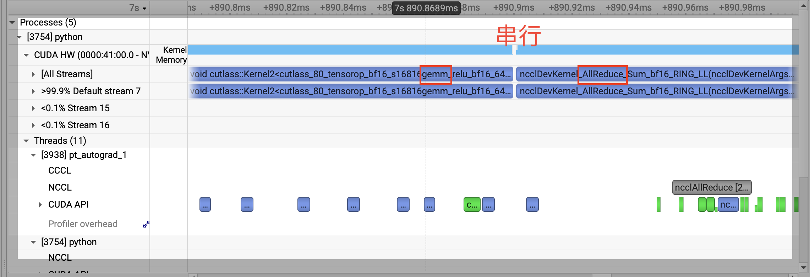
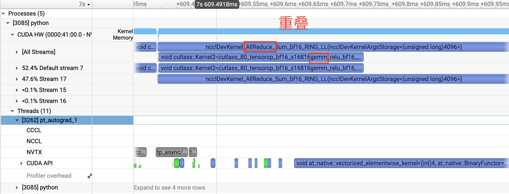

flowchart LR
classDef comm fill:#e8590c,stroke:#8a2e00,color:#ffffff,stroke-width:2px;
classDef data fill:#1971c2,stroke:#0b4a85,color:#ffffff,stroke-width:1px;
subgraph BASIC["基础 SP"]
direction TB
L1["local shard"]:::data --> G1["forward all-gather"]:::comm
G1 --> F1["Linear"]:::data
F1 --> S1["保存 full input 到 backward"]:::data
end
subgraph RECOMPUTE["SP Recompute"]
direction TB
L2["local shard"]:::data --> G2["forward all-gather"]:::comm
G2 --> F2["Linear"]:::data
F2 --> S2["只保存 local shard"]:::data
S2 --> G3["backward all-gather"]:::comm
G3 --> B2["计算 wgrad / dgrad"]:::data
end
BASIC ~~~ RECOMPUTE
4 Sequence Parallelism：显存边界、异步通信与重计算
4.1 基础 SP Benchmark
SP 没有改变模型的数学语义，数值验证仍可沿用 小节 2.14 的方法，只需增加 --sequence_parallel。这里直接回到 小节 2.15 的相同配置，观察将 TP 区域之间的 hidden states 切成 sequence shards 后，显存和时间如何变化。
python -m evaluation.parallel benchmark \
--kind memory \
--tp_size 2 \
--pp_size 1 \
-- \
--modes ddp tp \
--batch_policy fixed_per_rank \
--num_hidden_layers 8 16 32 64 \
--seq_len 2048 \
--hidden_size 768 \
--num_attention_heads 8 \
--num_key_value_heads 4 \
--vocab_size 6400 \
--micro_batch_size 2 \
--num_microbatches 1 \
--dtype bfloat16 \
--warmup_iters 2 \
--benchmark_iters 5 \
--sequence_parallel \
--output_csv results/tp/tpsp2_layers.csv \
--output_plot results/tp/tpsp2_layers.png| Layers | TP only 显存 | TP + SP 显存 | 显存下降 | TP only step | TP + SP step | 时间增加 |
|---|---|---|---|---|---|---|
| 8 | 1509.53 MiB | 1447.99 MiB | 4.1% | 66.47 ms | 74.53 ms | 12.1% |
| 16 | 2717.69 MiB | 2608.19 MiB | 4.0% | 129.90 ms | 144.38 ms | 11.1% |
| 32 | 5129.40 MiB | 4925.45 MiB | 4.0% | 255.60 ms | 284.55 ms | 11.3% |
| 64 | 9956.83 MiB | 9560.83 MiB | 4.0% | 502.83 ms | 565.00 ms | 12.4% |
基础 SP 的单卡峰值显存只比 TP only 低约 4%，远没有达到把所有 activation 都缩小到 \(1/T\) 时可能产生的直觉收益；与此同时，额外的 all-gather 和 reduce-scatter 使 step time 增加了约 11%～12%。
这个结果说明，小节 3.5 中的 sequence-sharded layout 的确减少了 Norm、Dropout 和 residual 区域的重复 activation，但还有更大的 tensor 没有被这套布局覆盖。下一节将沿着 Column Parallel Linear 的 tensor 生命周期寻找它们。
4.2 为什么基础 SP 的显存收益有限
基础 SP 已经具备正确的数值逻辑与语义，但它仅缩小了 TP 区域边界处（Norm、Dropout 和 Residual 路径）的 Activation。
在同步版本的 Column Parallel Linear 中，前向传播依然需要执行：
full_x = gather_from_sequence_parallel_region(local_x, group)
output = F.linear(full_x, weight)PyTorch Autograd 为了在反向传播（Backward）中计算权重的梯度：
\[dW = dY^T X\]
会保存 Gather 后的完整张量 full_x: [S, B, H]。因此，Sequence Shard 虽在 Norm、Dropout 和 Residual 区域生效，但一进入 Linear 计算，主要的 Activation 又恢复为完整 Sequence，并持续占用显存直至反向传播结束。
4.2.1 Activation 理论减少量推导
在基础 SP 下，真正得到省去的 Activation 仅包含每个 Transformer Block 中的两个 RMSNorm 输入，以及模型末端的最终 RMSNorm 输入。
4.2.1.1 层内 RMSNorm 的显存节省
每层两个 RMSNorm 输入 Activation 的理论减少量公式为（BF16精度）：
\[M_{\text{saved}} \approx 2\text{ bytes} \times B \times S\left(1-\frac{1}{T}\right) \times H \times 2 \times L\]
代入 小节 4.1 的具体配置（\(B=2, S=2048, T=2, H=768\)）， 对于 \(L\) 层的模型，层内 RMSNorm 输入 Activation 的理论减少量为：
\[2\text{ bytes} \times 2 \times 2048 \times \frac{1}{2} \times 2 \times 768 \times L = 6L\text{ MiB}\]
\[\Delta M_{\text{layer}} = 6L\text{ MiB}\]
4.2.1.2 模型末端 RMSNorm 的显存节省
模型末端的最终 Norm 独立于 Transformer 层之外：
hidden_states = self.norm(hidden_states)Minimind 的 RMSNorm 实现中，为保证数值稳定性会显式产生 FP32 的中间张量：
return (weight * self.norm(x.float())).type_as(x)训练时，Autograd 需要为输入梯度计算和 Weight 梯度计算保留 x.float() 及其归一化结果。这两个张量均为 [S, B, H] 形状的 FP32 张量（单张量占用 \(4\text{ bytes}\)）。
在当前配置下，序列维度从 \(S=2048\) 切分为 \(S/T=1024\)，省去的显存量为：
\[\begin{aligned} \Delta M_{\text{final\_norm}} &= 2 \times \left[ 4\text{ bytes} \times B \times S\left(1 - \frac{1}{T}\right) \times H \right] \\ &= 2 \times \left[ 4\text{ bytes} \times 2 \times 1024 \times 768 \right] \\ &= 12,582,912\text{ Bytes} = 12\text{ MiB} \end{aligned}\]
4.2.2 理论估算与实测对比
综合上述两部分，当前实现下基础 SP 节省的 Activation 总显存估算为：
\[\Delta M_{\text{estimated}} \approx 6L + 12\text{ MiB}\]
将该估算值与 小节 4.1 中的实测显存差值进行对比：
| Layers (\(L\)) | 估算减少量 (\(6L+12\text{ MiB}\)) | 实测差值 (\(\text{TP only} - \text{TP + SP}\)) | 偏差 |
|---|---|---|---|
| 8 | 60 MiB | 61.54 MiB | +1.54 MiB |
| 16 | 108 MiB | 109.50 MiB | +1.50 MiB |
| 32 | 204 MiB | 203.95 MiB | -0.05 MiB |
| 64 | 396 MiB | 396.00 MiB | 0.00 MiB |
结论：理论估算与实测结果高度吻合。
这说明基础 SP 确实按 \(1/T\) 缩小了 Norm 区域的输入 Activation，但这些 Activation 只是 model 中所有 Activation 的一部分，Column Parallel Linear 仍须为 Backward 保存全量 Sequence 的 Activation，若要进一步降低显存占用，就需要引入重计算，改写 Linear 保存至 Backward 的 Activation 结构。
4.3 如何避免保存 Full-Sequence Activation
小节 4.2 中的问题来自 autograd 跨越 forward/backward 保存了 full_x。 如果 forward 只保存 local shard，并在 backward 需要 \(dW\) 时重新 all-gather，就能用额外通信换取 activation 显存； 同时，既然已经需要自己修改 Linear，我们还可以尝试把 dgrad 通信与 wgrad GEMM 重叠，减少通信带来的 overhead。
LinearWithAsyncCommunication 因此同时处理两个问题：
- 普通 TP 中，让 dgrad all-reduce 尝试与 wgrad GEMM 重叠；
- SP 中只保存 local sequence shard，在 backward 时重新构造完整 input。
对应的配置是：
async_communication: bool = False4.3.1 普通 TP：异步 dgrad all-reduce
Column Parallel Linear 的 backward 可以写成：
1. 接收 dY_local（上层传来的局部梯度）
2. 计算本地 dgrad
3. 发起异步 All-Reduce，跨 TP Rank 累加 dgrad
4. 计算本地 wgrad：dW_local = X^T @ dY_local
5. 计算本地 bias 梯度
6. 等待 All-Reduce
7. 返回完整 dgrad 4.3.2 SP：只保存 local shard
SP forward：
local_x [S/T,B,H]
-> all-gather full_x [S,B,H]
-> GEMM
-> autograd 只保存 local_x 和 weight
-> forward 结束后释放 full_xSP backward：
1. async all-gather local_x，重新构造 full_x
2. 计算 local dgrad
3. async reduce-scatter dgrad
4. wait all-gather
5. 使用 full_x 计算 wgrad
6. wait reduce-scatter
7. 返回 local sequence grad这是一项明确的用时间换空间，使用额外的通信来减少需要储存的 tensor 尺寸。
减少：跨 forward/backward 保存的 full input
增加：backward 中重建 full input 的 all-gather按照两层 MLP 抽象，每个 block 的 SP backward 通信次数为：
| 路径 | Column Parallel backward | Row Parallel backward |
|---|---|---|
| 基础 SP | 4 次 reduce-scatter | 2 次 all-gather |
| SP Recompute | 4 次重建 input 的 all-gather + 4 次 dgrad reduce-scatter | 2 次 all-gather |
MiniMind 源码中的额外 MLP projection 会让上述 Column Parallel 通信次数从 4 变为 5。融合投影可以减少通信次数，但会改变参数布局和 checkpoint 转换逻辑，不属于当前实现。
TP+SP 的数值验证仍沿用 小节 2.14 的方法，比较 forward logits/loss、关键参数梯度和多步 AdamW；这里不再重复展开相同的验证步骤。
4.4 Async 与 Recompute Benchmark
小节 4.3.1 和 小节 4.3.2 对 LinearWithAsyncCommunication 提出了两个目标：普通 TP 用通信—计算重叠缩短时间，SP 则通过 backward 重建 full-sequence input 进一步节省显存。这一节将对两者进行 benchmark，验证它们的实际收益。
4.4.1 普通 TP：Async 能隐藏多少通信
先运行同步 TP 基线：
CUDA_DEVICE_MAX_CONNECTIONS=1 python -m evaluation.parallel benchmark \
--kind memory \
--tp_size 2 \
--pp_size 1 \
-- \
--modes ddp tp \
--batch_policy fixed_per_rank \
--num_hidden_layers 2 4 8 16 32 \
--seq_len 2048 \
--hidden_size 768 \
--num_attention_heads 8 \
--num_key_value_heads 4 \
--vocab_size 6400 \
--micro_batch_size 4 \
--num_microbatches 1 \
--dtype bfloat16 \
--warmup_iters 10 \
--benchmark_iters 5异步版本保持其余参数不变，只增加：
--async_communication| Layers | 同步 TP | Async TP | Step time 下降 |
|---|---|---|---|
| 2 | 35.82 ms | 35.27 ms | 1.5% |
| 4 | 66.55 ms | 65.39 ms | 1.7% |
| 8 | 127.84 ms | 125.64 ms | 1.7% |
| 16 | 249.51 ms | 245.38 ms | 1.7% |
| 32 | 493.13 ms | 484.62 ms | 1.7% |
Async 不改变保存的 tensor，因此两组实验的峰值显存完全相同。Step time 的下降也不大，在本次配置中约为 1.5%～1.7%。但端到端收益小，并不能直接说明 overlap 没有发生；还需要回到 小节 4.3.1 的目标，观察 dgrad all-reduce 与 wgrad GEMM 在 GPU 时间线上是否真正交叠。
同步实现中，all-reduce 与 GEMM 串行执行：

异步实现将 NCCL all-reduce 与 wgrad GEMM 重叠：

因此，这里的实现机制是生效的，但它只隐藏 Columnn Parallel 的 all-reduce 与 wgrad GEMM 相交的部分，其他同步 collective的开销不会消失，最终只获得约 1.7% 的端到端改善。
4.4.2 SP：Recompute 的时间—显存交换
小节 4.3.2 中的 SP Recompute 不再让 Column Parallel Linear 跨越 forward/backward 保存 full-sequence input，而是在 backward 中重新 all-gather。下面比较基础 SP 与这一实现的峰值显存和 step time。
需要说明的是，本章所谓的“基础 SP”只是为了分步解释 tensor layout 而构造的中间版本，并不是 Megatron 中实际使用的一种独立 SP 配置。Megatron 所说的 Sequence Parallelism 已经包含只保存 local shard、在 backward 中重新 all-gather input 的过程；对应到 MiniMind，就是本节测试的 sequence_parallel + async_communication，也就是 TP + SP + Async。因此下面的基础 SP 数据只用于拆解这一步优化，最终应关注 Recompute 版本。
先运行基础 SP：
CUDA_DEVICE_MAX_CONNECTIONS=1 python -m evaluation.parallel benchmark \
--kind memory \
--tp_size 2 \
--pp_size 1 \
-- \
--modes ddp tp \
--batch_policy fixed_per_rank \
--num_hidden_layers 2 4 8 16 32 \
--seq_len 2048 \
--hidden_size 768 \
--num_attention_heads 8 \
--num_key_value_heads 4 \
--vocab_size 6400 \
--micro_batch_size 4 \
--num_microbatches 1 \
--dtype bfloat16 \
--warmup_iters 10 \
--benchmark_iters 5 \
--sequence_parallelRecompute 版本保持其余参数不变，只增加：
--async_communication当前实现用同一个开关同时启用 SP Recompute 和 backward 异步通信，因此这组实验不能把两者的时间影响单独拆开。显存变化来自只保存 local shard；step time 则同时包含额外 backward all-gather，以及 dgrad collective 与 wgrad GEMM 重叠后的净结果。
| Layers | 基础 SP 显存 | Recompute 显存 | 显存下降 | 基础 SP step | Recompute step | 时间增加 |
|---|---|---|---|---|---|---|
| 2 | 1052.08 MiB | 956.73 MiB | 9.1% | 40.46 ms | 48.70 ms | 20.4% |
| 4 | 1588.95 MiB | 1398.82 MiB | 12.0% | 74.19 ms | 91.16 ms | 22.9% |
| 8 | 2665.97 MiB | 2282.97 MiB | 14.4% | 141.76 ms | 175.38 ms | 23.7% |
| 16 | 4824.38 MiB | 4056.38 MiB | 15.9% | 276.60 ms | 343.93 ms | 24.3% |
| 32 | 9136.96 MiB | 7600.27 MiB | 16.8% | 546.35 ms | 680.42 ms | 24.5% |
显存收益可以直接从 Column Parallel Linear 保存的输入验算。当前配置为：
\[ B=4,\qquad S=2048,\qquad H=768,\qquad T=2. \]
一份 full-sequence BF16 input 占用：
\[ 2\times B\times S\times H=12\text{ MiB}, \]
local sequence shard 则占 \(6\) MiB。MiniMind 每个 block 有五个 Column Parallel Linear：
Attention: q_proj, k_proj, v_proj
MLP: gate_proj, up_proj基础 SP 中，每次 Column Parallel forward 都会单独 all-gather。Q/K/V 因此保存三份独立的 full input，gate/up 再保存两份：
\[ M_{\text{basic, per block}} = (3+2)\times12 =60\text{ MiB}. \]
Recompute 版本不保存这些 gather 输出。三个 Attention projections 只引用同一份 local input storage，两个 MLP projections 也只引用同一份 local input storage：
\[ M_{\text{recompute, per block}} = (1+1)\times6 =12\text{ MiB}. \]
因此每个 block 的理论减少量为：
\[ 60-12=48\text{ MiB}. \]
| Layers | 理论减少量 \(48L\) | 实测减少量 |
|---|---|---|
| 2 | 96 MiB | 95.35 MiB |
| 4 | 192 MiB | 190.13 MiB |
| 8 | 384 MiB | 383.00 MiB |
| 16 | 768 MiB | 768.00 MiB |
| 32 | 1536 MiB | 1536.69 MiB |
理论值与实测结果基本一致，说明显存下降确实来自 小节 4.3.2 描述的 activation 生命周期变化。随着层数增加，固定的参数、optimizer states 和模型边界显存被逐渐摊薄，因此 Recompute 的相对显存收益从 9.1% 上升到 16.8%；但每层新增的 backward all-gather 也使时间代价逐渐稳定在约 24%～25%。
这组结果展示的是一项明确的取舍：Recompute 用更长的 step time，换取更少的单卡峰值显存。